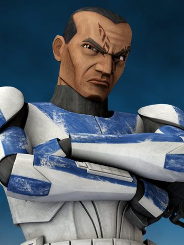
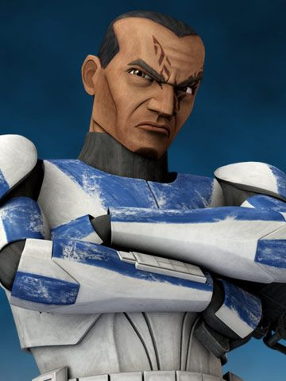

Clones - Star Wars
Inicios
La Clonación era el proceso de hacer crecer un duplicado genético de una fuente original. Treinta y dos años antes de la Batalla de Yavin, el Maestro Jedi Sifo-Dyas le encargó a los científicos Kaminoanos que crearan un ejército de soldados clones para la República Galáctica. En una década, la República movilizó al ejército clon en respuesta al movimiento separatista de la Confederación de Sistemas Independientes, lo que resultó en el estallido de las Guerras Clon.
 
